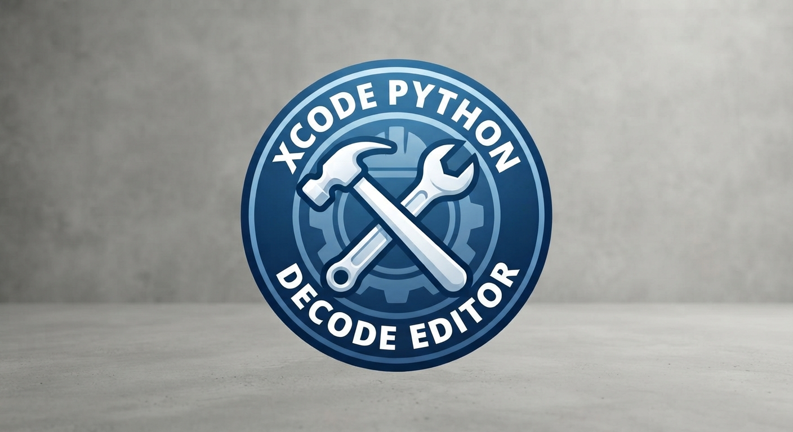
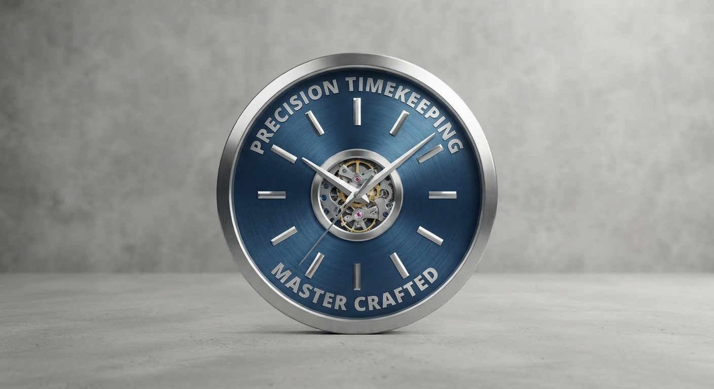

⌁
Offline by design
Core scans, signatures, quarantine, and history work without uploading file contents.
OffFactory Web is a clean home for SafeScan Defender and practical Python creator apps. The galaxy background is animated, dimmed, and kept behind the content for a smoother page.
Core scans, signatures, quarantine, and history work without uploading file contents.
Known threats and suspicious signals are separated, with a reason shown for each result.
Windows is available now; the macOS GUI source is included for Xcode testing.
Each project is local-first and shipped with source code so you can inspect, edit, and run it yourself.
Windows security scanner with local signatures, quarantine, history, and experimental monitoring.
Download appOpen, edit, save, and run code files locally through Python. Use the terminal button only when you choose to run a file.
Download editorA simple desktop calculator built with Tkinter and safe expression evaluation.
Download calculatorSee multiple time zones in a lightweight desktop clock.
Download clockStandalone local tool for decoding text, Base64, and hexadecimal files you own.
Download decoderNative SwiftUI source for building and testing on macOS with Xcode.
Download Xcode sourceThese are the product surfaces planned or implemented across the scanner and desktop UI. Availability depends on the platform build.
Local fingerprints
Bundled threat data
Suspicious, not overstated
Safe inaccessible-file handling
Supported package paths
Restore workflow
Stored locally
Windows experimental
Accurate classifications
Dark and purple modes
Native app foundation
Accessible website animation
The gallery shows the Windows application shipped in the release ZIP.

Protection status, scan controls, results, and quick actions.

Theme, heuristics, archives, hidden files, and quarantine preferences.
Download the Windows SafeScan build, macOS scanner, Python apps, or native Xcode source.
Full desktop GUI with local scanning, quarantine, history, and experimental real-time monitoring.
Download Windows ZIPPortable local SHA-256 scanner for macOS.
Download macOS ZIPSwiftUI source to build on a Mac with Xcode.
Download Xcode ZIPOnly download and run code you trust. Python projects run locally and may open a terminal only when you explicitly select Run.
Preferences are stored only in this browser. App settings remain inside the downloaded application.
Google sign-in is not enabled on this static site. No passwords or account data are collected.
OffFactory · implementation and product direction.
Immanuel Mboowa · original idea contribution.
OffFactory · implementation and product direction.
Immanuel Mboowa · original idea contribution.
Send ideas, feedback, or collaboration requests to mboowajessie4@gmail.com or jessemboowa1@gmail.com.
SafeScan keeps detection conservative: a suspicious signal is explained as suspicious, not presented as certainty. The website animation respects reduced-motion preferences, and every platform card states whether a build is ready, CLI-only, or source-only.
These SwiftUI projects are ready to open in Xcode on macOS. The repository cannot compile or sign Mac apps from Windows, so build and test them on a Mac.

SwiftUI · XcodeOpen, edit, save, and run trusted Python files with a native Mac editor.
Download Xcode source
SwiftUI · XcodeNative world clock showing UTC, London, New York, Kampala, Tokyo, and Sydney.
Download Xcode source